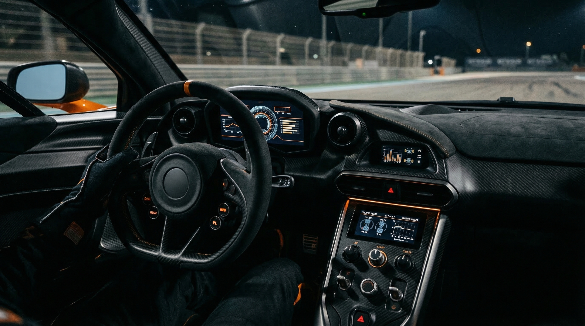

SERVICE
MODULES
更新設計、監視、障害一次対応、標準化まで。拠点運用に必要な実務支援を、フェーズ別に整理して提供します。
// WHAT WE DO
高負荷運用の現場で実際に使う支援内容を、導入順に並べています。

Rollout Design
拠点ごとの回線、端末、作業時間帯を整理し、更新単位と切り戻し条件を事前に定義。配信事故を起こしにくい導入計画を作ります。
- check_circle Site Grouping
- check_circle Rollback Policy
- check_circle Maintenance Window
Monitoring Desk
端末状態、更新進捗、障害アラートを単一画面に統合。オペレーターが一次判断しやすい閾値と通知線を設計します。
- check_circle Unified Status View
- check_circle Alert Routing
- check_circle Shift Handover Notes
Incident Response
障害起点の切り分け、切り戻し、一次報告、関係者通知までをランブック化。夜間の判断負荷を下げて対応速度を揃えます。
- check_circle Runbook Templates
- check_circle Escalation Matrix
- check_circle Recovery Checklist
Ops Governance
監査ログ、権限設計、承認フローを整理し、拠点拡大後も管理ルールが崩れない運用土台を整えます。
- check_circle Audit Trail
- check_circle Access Control
- check_circle Approval Flow
Field Support
拠点立ち上げや機器更改時の現地調整を支援。オペレーションセンターと現場担当の受け渡しを明確にして立ち上がりを安定させます。
- check_circle Launch Checklist
- check_circle On-site Enablement
- check_circle Handover Support
Data Integration
監視、資産管理、チケット、告知基盤を疎結合で接続。重複入力を減らし、運用記録が追える状態を作ります。
- check_circle Ticket Sync
- check_circle Asset Reference
- check_circle Status Broadcast
// DELIVERY FLOW
導入前の整理から定着化まで、実施順に進めます。
Discovery
対象拠点、運用体制、既存監視、障害時の動きを整理して現状課題を見える化します。
Design
配信単位、監視項目、切り戻し条件、通知先を定義し、現場が迷わない設計に落とし込みます。
Deployment
小さな対象から段階導入し、運用画面とアラート線を実際の当番体制に合わせて調整します。
Stabilize
導入後 30 日の運用ログを見ながら閾値と手順を調整し、標準運用として定着させます。
READY TO REBUILD OPS?
属人化した多拠点運用を整理したいなら、まずは現状の運用フローから共有してください。